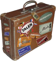
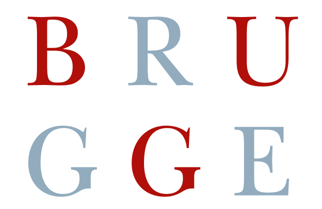
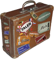
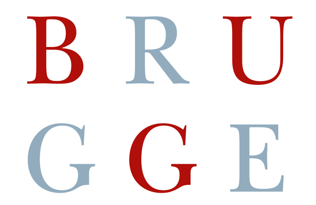
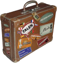
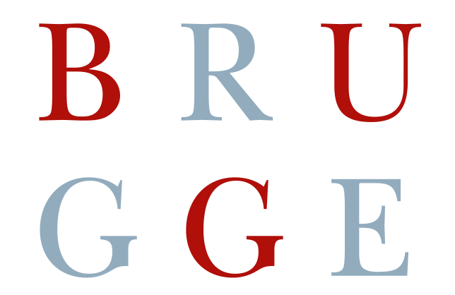

PindaNet.be
SNT
LINUX
Elektronische Leeromgeving VOLWASSENEN
ONDERWIJS
LINUX
Elektronische Leeromgeving VOLWASSENEN
ONDERWIJS


Sluit het WiFi Access Point af door op de knop te klikken.
Wacht tot het WiFi Access Point volledig is afgesloten, m.a.w. wacht tot het groene lampje (naast het rode power lampje) op het WiFi Access Point niet meer knippert.
Verwijder de stroomadapter uit het stopcontact.
Om het WiFi Access Point te starten, plug je de stroomadapter terug in het stopcontact, enkele minuten later is het WiFi Access Point opgestart en beschikbaar.

Plug een USB-stick in het WiFi Access Point om de inhoud ervan te delen op het netwerk.
Het WiFi Access Point ondersteunt enkel VFAT (standaard) en ExFAT (voor grote bestanden) geformateerde USB-sticks.
De op het WiFi Access Point aangesloten USB-sticks zijn voor de veiligheid enkel te lezen. Je kunt ze dan ook zonder problemen verwijderen.
Sluit geen USB harde schijven aan, de voeding en het WiFi Access Point kunnen dit niet aan. Extern gevoede USB harde schijven kan je wel aansluiten.
om een gedeelde USB-stick via Windows verkenner te openen, typ je in de adresbalk \\snt-guest gevolgd door Return. Open de map Media en daarna de map met het label van uw USB-stick om de inhoud ervan weer te geven.